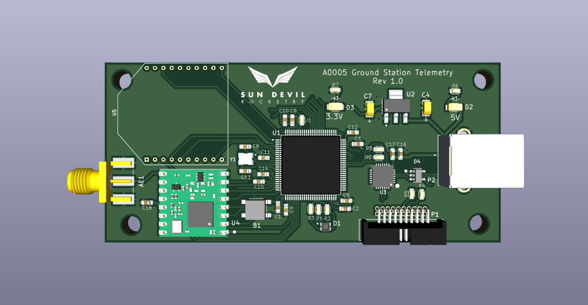

Ground Station Unit
Description
The ground station unit functions as a serial bridge between a PC running Sun Devil Rocketry software and Sun Devil Rocketry custom hardware such as the liquid engine controller or flight computer. The unit communicates with the PC over USB, and to the custom hardware using either ethernet, XBee wireless, or LoRa wireless. This allows for remote communication with the hardware in order to allow for in-flight telemetry or remote monitoring of liquid engine sensors. The unit is equipped with an ARM Cortex-M7 microcontroller for input-output processing.
Technical Specifications
Dimensions: 1.7"x3.7"
Microcontroller: STM32H750VBT6
Processor: ARM Cortex-M7
Maximum Clock Speed: 480 MHz
Memory: 128 kB Flash, 1MB RAM
Supply Voltage: 5V (USB)
Maximum Current Draw: 1A
Connectivity: USB, RS485/Ethernet, XBee, LoRa
Sources and Documentation
Schematic: Ground-Station-Schematic.pdf
Design Doc: Flight-Computer.pdf
PCB Design Files: GitHub
Firmware Source Code: GitHub
Bill of Materials: BOM.pdf, BOM.xlsx
3D Model: Ground-Station.step
Version History
Version 2.0
Updates:
- Used in 4/27/2023 and 5/12/2023 Liquids static hotfire attempts
- Added RS485/Ethernet interface for liquids hotfire
Version 1.0
Updates:
- Initial version
- Added XBee and LoRa modules